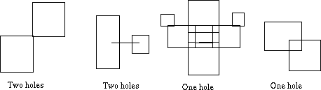

A factory which specialises in making cuts in the interior of flat sheets has just acquired a new cutter
which can make cuts much more freely than any of their previous machines, and they want you to write a program
to calculate exactly what has happened when a complex series of cuts are made. In particular, they need to
know the number of holes which are formed in the sheet by the cuts.
A cut is a simple straight line, parallel to either the x or y axis. A hole is an area completely surrounded
by cuts. Note that a hole must have positive area (thus a single cut cannot form a hole on its own).
Here are some examples of situations that can arise after cutting:

Input will consist of several cutting
operation descriptions. Each description starts with a number, N, giving the number of cuts in the operation,
followed by N lines (
1 < N < 100) giving the actual cuts. Each cut will be given by four whole numbers
separated by one or more spaces, the first two giving the (x, y) coordinates of the start of the cut line
and the second two defining the end of the cut line; the coordinate values will always be whole numbers
between 0 and 9999 inclusive. You may assume that the metal sheet extends beyond this range, so that all
points are within the sheet's interior. The input will be terminated by a line consisting of a single 0,
ie a cutting operation description with N = 0. The first example given below describes the left hand picture above.
For each cutting operation description in the input,
one line of output should be produced. This line should contain the number of distinct holes in the sheet after
the cuts. Note that the minimum area of any hole is 1 square unit.
6
1 0 1 1
2 0 2 2
3 1 3 2
1 0 2 0
1 1 3 1
2 2 3 2
2
0 1 2 1
1 2 1 0
0
2
0
Miguel Revilla
2004-07-08